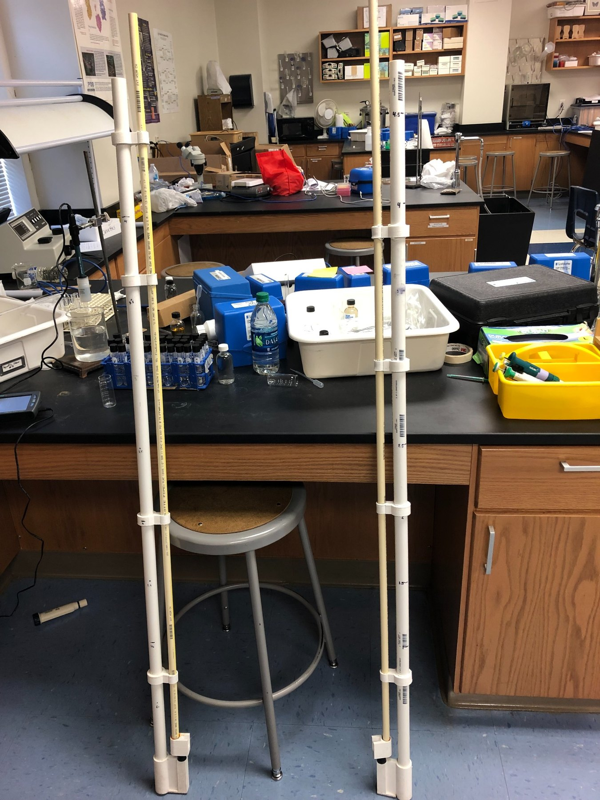

PVC depth-sampling tools used for the Jones State Forest project.
Click any thumbnail to view it larger.
Project Overview
A physical tool for controlled sampling at different depths.
The project required collecting water samples at known locations and depths so the team could compare microorganisms observed across the study area.
I helped build a long PVC mechanism that could hold test tubes and allow them to be opened and closed at depth rather than only at the water surface.
What I worked on
- Built and iterated the PVC sampling mechanism used to position and actuate test tubes at different depths.
- Used ArcGIS to document sampling locations around the study area.
- Supported field collection and the organization of the resulting microbial observations.
- Presented the project and physical sampling tool as part of the final team presentation.
Video